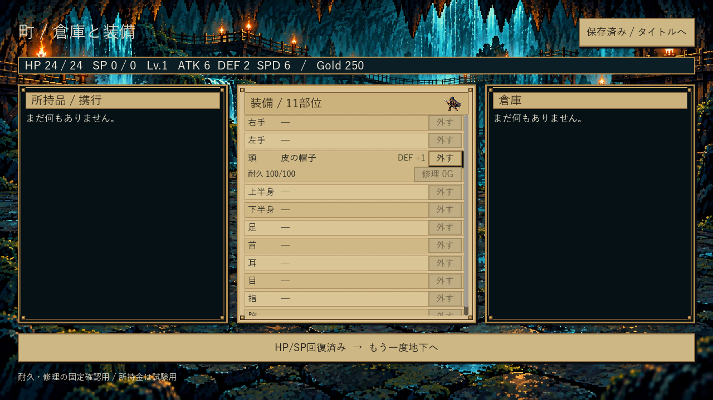
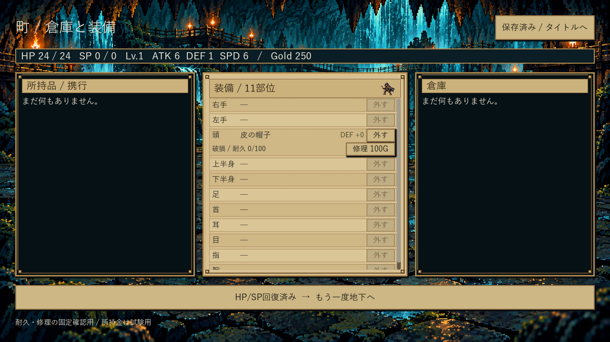
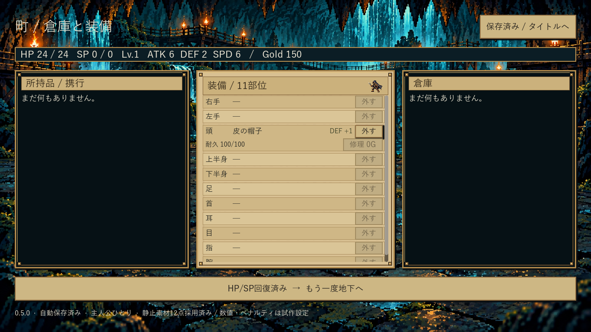

装備の耐久・破損・修理
工程1は既存証拠で受入済み。工程2の最初の単位を開発版0.5.0へ実装しました。通常の起動入口は0.4.6のままです。
今回のCIは成功。工程2全体は進行中です。
通常の探索で装備を入手・装備し、町で耐久と修理費を確認できます。消耗・費用は試作用の仮値です。初期装備5点、収納15+3、死亡全損はまだ本版へ統合していません。以下の画面は表示と保存の確認用で、250Goldは試験用です。
満耐久

破損：装備効果0

修理後：Goldと効果を更新

別EXEの再起動後も保持
